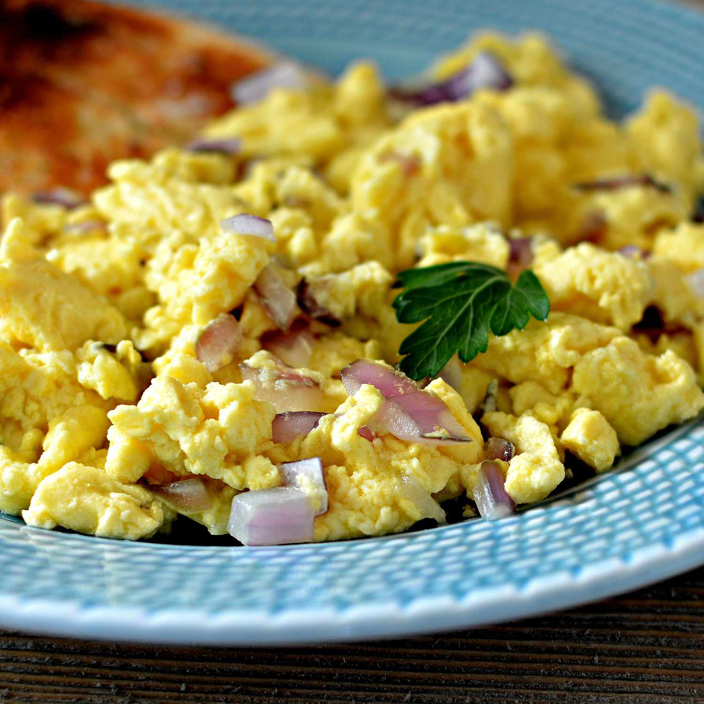

Scrambled Eggs

Ingredients
- 3 eggs
- creole seasoning Yes, I like creole seasoning a lot
- half an onion
- olive oil
- tobasco sause
Steps
- Dice half an onion and set to the side
- Crack three eggs and place yolks into a bowl
- Season yolk mix with creole seasoning and a little bit of tobasco until it has a uniform color
- Pour oil into pan and set to medium heat
- When the oil is hot enough, pour yolk mixture into pan
- pull the edges of the eggs towards the center when bubbles appear on the edges
- Flip the eggs until all parts are cooked!